Semestre 5
Systématique appliquée
Flore = liste des espèces
Végétation = quantitatif, proportion d'espèces
Biais = erreur systématique
Les bases fondamentales de l'échantillonage
Un échantillonage est toujours construit pour répondre à une question, même si elle est formulée de manière non déclarative, doit -être rendue apparente, pour constuire l'outil permettant d'y répondre, le plan d'échantillonage.
Un plan d'échantillonage produit des données qui permettront de tester des hypothèses. Le plan doit - être adapté au type de question posée. En retour, la question doit être dimensionnée pour qu'il soit possible d'y répondre.
Nombre d'espèce = richesse
Plus on grandit les espaces, plus la richesse augmente. Les ecosystèmes changent donc la liste des espèces s'accélère. L'orsque l'on arrive à la frontière régionale, on est dans la biogéographie. Le nombre d'espèces augmente mais plus faiblement.
On aura des marches d'escaliers en fonction de l'échelle croissante.
I) Les généralités
L'objectif de l'échantillonage est de permettre d'inférer à partir des propriétés d'un ensemble d'échantillons, celle de la pop mère
Question méthodo: comment déterminer les caractéristiques d'un plan d'échantillonnage de façon à obtenir le maximum d'info pertinentes en fonction du pb posé.
Problème : Choisir une méthode et une stratégie d'utilisation de cette méthode permettant d'obtenir une représentation satisfaisante de l'objet étudié.
Domaine d'application: échantillonage de groupes d'animaux à caractère bio-indicateur.
II) Problématique générale
Prise en considération de la complexité extrême des systèmes bio
- Trop complexe pour être décrits dans leur ensemble
- Un échantillon de ces systèmes est souvent lui même très complexe
- Leur étude se limite à une image approximative, restreinte à un petit nombre de caractères ou descripteurs choisis en fonction d'une problématique précise
ex des milliers d'espèces dans certeins ecosystèmes tropicaux, les insectes sont très variés
II) Définitions
Echantillon: Frangment d'un ensemble prelevé pour juger cet ensemble.
Descripteur : variable qualitative ou quantitative utilisée pour décrire un échantillon conformément aux préoccupations de l'étude
Echantillonage : action de collecte des échantillons
Plan d'échantillonage : ensemble de processus décisionnels qui aboutissent au plan d'échantillonage et à son amélioration en fonction des résultats.
IV) L'inférence stat
Le plan d'échantillonage doit permettre l'interférence statistique
L'estimation des propriétés vraies de l'objet global
Importance du choix du descripteur
richesse spécique = nombre d'espèces présentes
On ne sait pas pour quel groupe l'échantillonage, le représentera le mieux.
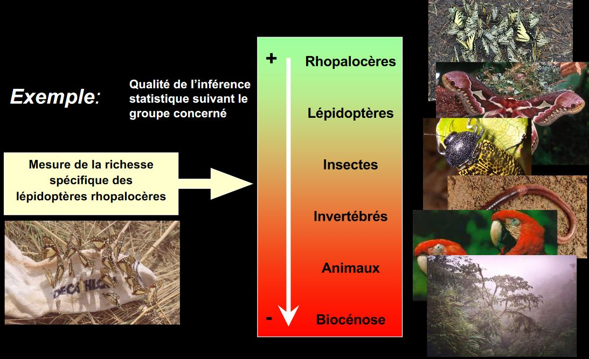
La meilleure estimation va être trouvé si:
-
On évite le biais = info introduite non intentionnellement/ sans lien informatif avec la question dans les données lors de l'échantillonage et qui se retrouve en fin d'analyse
-
On parvient à réduire l'intervalle d'incertitude
Importance de la définition de la stratégie d'échantillonage
V) Les processus décisionnel
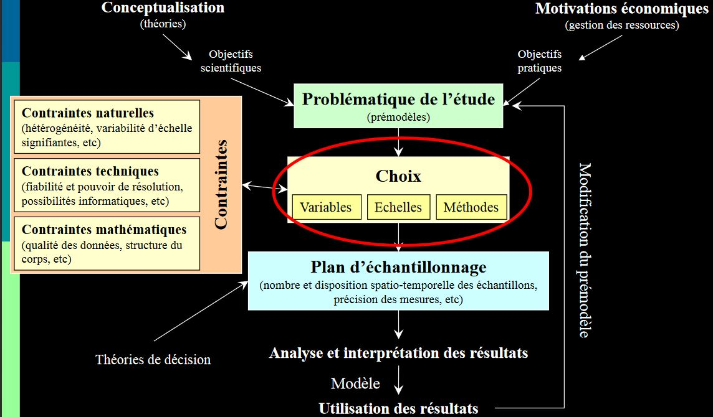
VI) Les échelles d'observation
Niveau d'organisation = Unité hierarchique formellement identifée et délimitée dans le temps et dans l'espace : échelle à laquelle des propriétés fonctionnelles émergent.
Echelle d'observation = domaine d'échelle choisi pour une étude donnée : échelle à laquelle on mesure
Ecosystème = niveau d'organisation mais l'échelle d'observation est difficile
Profil de sol = échelle d'observation
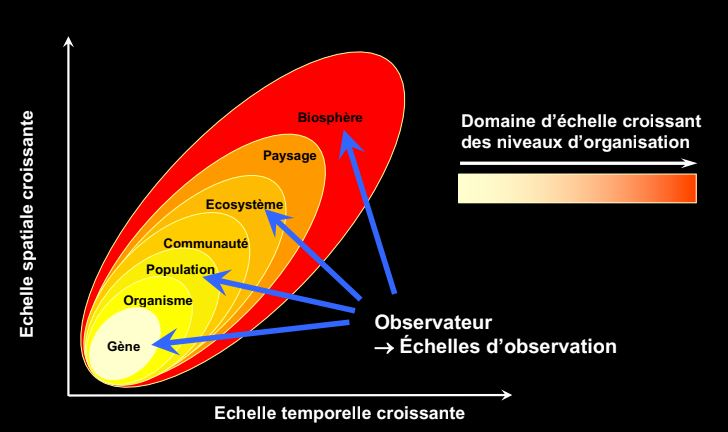
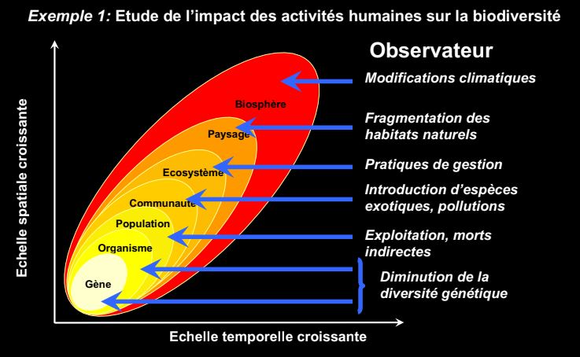
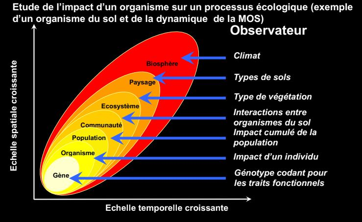
La réponse à une question peut vraiment dépendre de l'échelle à laquelle on la pose.
VII) Les descripteurs
Classification des descripteurs:
- Les decripteurs quantitatifs
- définis comme des quantités véritables unités de mesures numériques, permettant le calcul de rapports, moyennes, variance ect...
ex densité ou biomasse d'individu par taxon
- Les descripteurs qualitatifs
- Catégories ou modalités définies sans assignation de mesure
- pas d'ordre possible
- pas de calcul possible
ex présence/ absence d'un taxon dans une communauté
- Les descripteurs semi-qualitatifs
- Catégorie ou modalité par l'existence d'une relation d'ordre
- Pas de calculs possibles
ex classes de densité par taxon
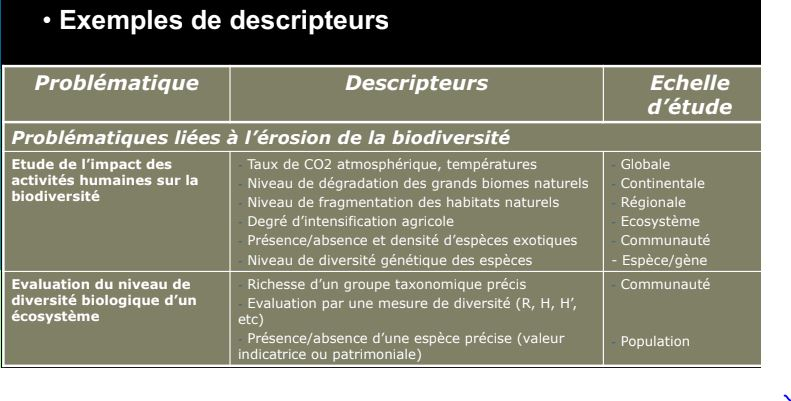
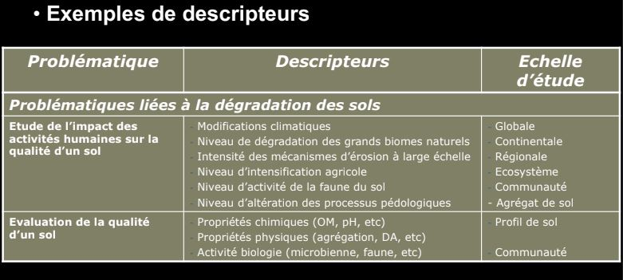
VIII) Les méthodes
Très fortement contraintes par les objets d'étude :
- Par le comportement des espèces
- Par le milieu échantilloné
- Par la taille des espèces
Différents types de méthodes d'échantillonnage :
- Méthodes destructrices ( échantillonnage de sol, prélevement d'individus pour identification au laboratoire)
- Méthode non destructrices ( comptage, libération d'individus, observations visuelles)
IX) Les contraintes naturelles
Les contraintes naturelles
-
sont lies aux caractéristiques propres des descripteurs:
- répartition spatiale et temporelle *distribution stat
-
dépendent des échelles d'observation
- à la structure de l'écosystème considéré
- à l'echelle d'observation choisie
X) Les contraintes
Les descripteurs ne sont généralement pas répartis de façon homogène dans l'espace
- problème d'autocorrélation spatiale et de l'indépendance stat des mesures
- forte contrainte sur une distance minimale entre mesures
- contrainte également sur l'emplacement des mesures
- cette contrainte est fonction de l'échelle d'observation
Les descripteurs ne sont pas répartis de façon homogène dans le temps
- forte contrainte sur le moment des mesures
- choix de la date maus aussi de la fréquence des mesures
- cette contrainte est également fonction de l'echelle d'observation
Les contraintes techniques
-
Liées à la nature des descripteurs
- méthode d'échantillonnage adaptée (macrofaune, édaphique, macrofaune dulçaquicole)
-
Liéees aux contraintes du cadre d'étude et de la méthode choisie
- pb de main d'oeuvre dispo
- pb de temps dispo
- pb de logistique
XI) Le plan d'échantillonnage
Plan d'échantillonnage aléatoire simple
- Avantage : le seul qui permet d'éviter les biais
- Problème : comment définit-on aléatoire
Plan d'échantillonnage structurés
- On introduit délibérément des informations en fonction d'une connaissance préalable, d'hypothèses de travail, d'une problématique, ect..
- On utilise alors un prémodèle;forme de description recherchée à priori en fonction de laquelle le plan d'échantillonnage est défini
La nature du prémodèle implique une idée préalable du traitement ultérieur des données
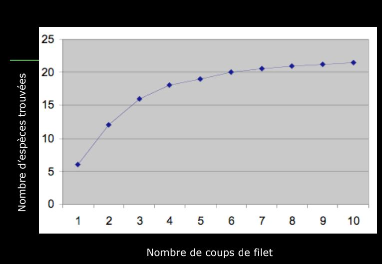
XII) Les objetcifs scientifiques et pratiques
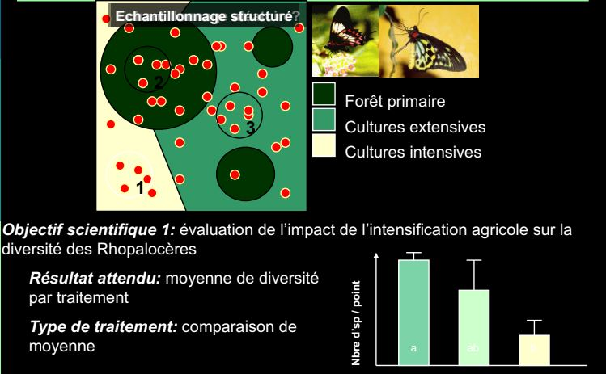

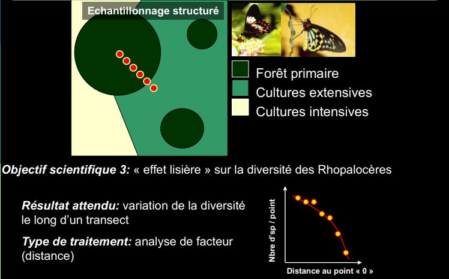
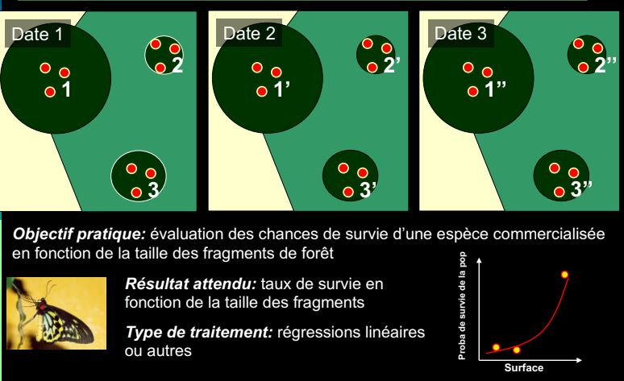

XIII) Les indices de diversité
Diversité biologique = ensemble de toute les formes de vie présentes sur notre planète, ainsi que des complexes écologiques auxquels elles appartiennent.
- Du gène, aux espèces et aux écosystèmes
- Groupes taxonomiques, groupes fonctionnels, groupe de réponse
- Peut etre mesurée à différentes échelles
- Peut être mesurée à l'aide d'une multitude d'indices
Ces indices sont des propriétés des communautés que l'on peut mesurer sur un échantillon donné Il rendent compte de différentes facettes de ce que l'on appelle la biodiversité
Diversité = une mesure qui intègre d'une manière ou d'une autre à la fois le nombre de catégories présentes et la répartition de leurs représentants dans la pop.
La rareté moyenne des catégories
On pourrait comparer sur un mode paramétrique les diversités si elles obéissent à des distributions similaires or:
Il n'existe pas de distribution universelle des abondances. On fait donc appel à des indices non paramétriques.